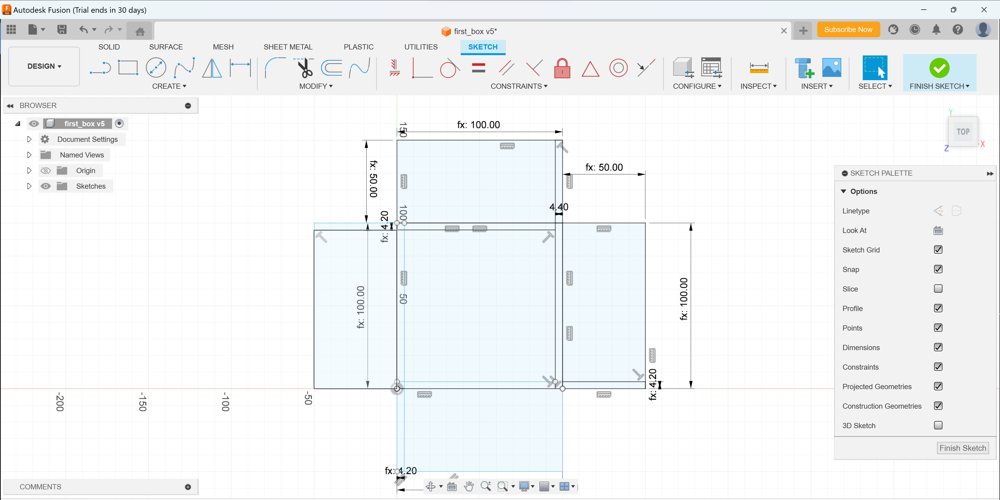

Week 2
project proposal and personal website
Assignment Prompt
-
Create a box (shoebox-sized or slightly smaller) to hold your materials for the rest of the semester.
-
Work through a Fusion 360 tutorial and document what you produce.
-
Select at least 2 household objects or components from the lab (could be items you think you might include in your final project). Measure them using calipers, and model them in Fusion 360 (or other program). Create an assembly using these components, and document your work on your webpage (by assembly we just mean a 3D model that contains multiple components, possibly connected by joints).
Process
-
Watching the tutorial in class I realized given my inexperience with both CAD and laser cutters, this would take some getting used to. Instead of designing with feet, I initially made the below design.

I didn't have time to print this in class, however. I then watched this tutorial and produced this, based on that.
The first iteration following the tutorial actually had 4 fingers instead of 3, as seen above. Also as we can see, this didn't work exceptionally. I didn't account for kerf, and I think this missing factor was exaggerated by the extra number of fingers. I then reduced the number of fingers and tried to add a small amount of kerf to the design so the fingers would fit better. Also, an issue was the scoring wasn't deep enough, I tried to fix this with Bobby's help and the first try was also unsuccessful as the scoring just cut through. Images are all shown below.

The scoring issue was solved by putting the scoring power from 4% to 13.5%. Then the 3 fingers I think work better overall, but there is still a fitment issue. One side holds well and the other again fails, I think this is due to kerf again. The bottom image above shows how the fingers meet. I plan to go into the lab early next week to make another iteration to fix this, or glue it down for now. Currently my box and the remnants of the first two iteration lay on the shelf. -
For my fusion 360 tutorial I followed this. It was very helpful in learning a lot about the basic features of fusion 360, although there are still aspects of it I think would be good to learn/practice. I will probably continue to watch tutorials as I go.
But I made this "lego" block from that tutorial.
-
paragraph3
Takeaways
-
paragraph(s)1
-
paragraph(s)2
-
paragraph(s)3